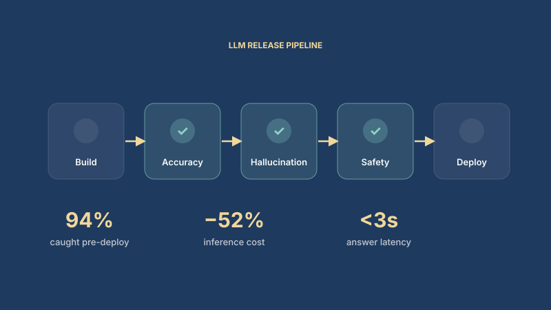
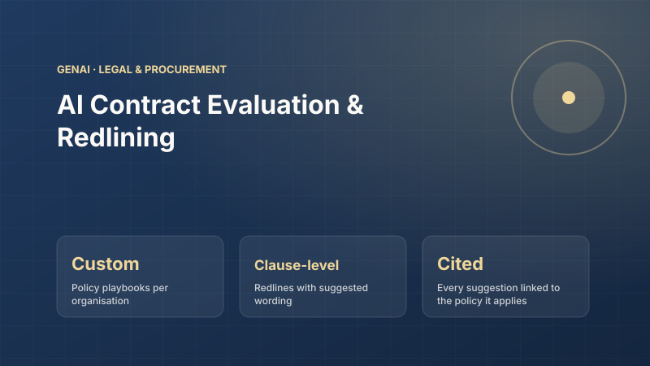
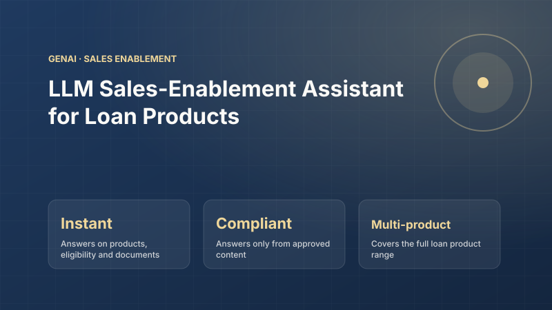
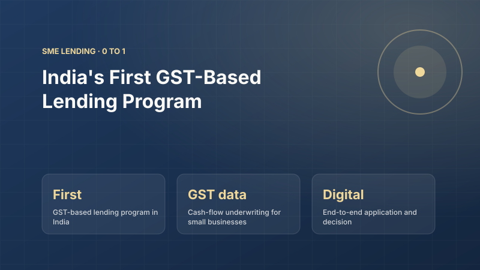

Products
The products I have led.
Each product has its own page covering the business context, my role, product strategy, technical architecture, business impact and the key decisions behind it.

AI Customer-Experience Analytics Platform
LLM-driven anomaly detection and agent-assisted operations over 4M+ customer interactions for a multi-brand real-estate group.
- 58 → 70+ NPS movement credited to the initiative
- 4M+ Reviews and survey responses monitored
- 80%+ Release-gate accuracy on 165-question harness

Order & Transaction Platform for a 10M+ User Super App
Event-driven credit and transaction platform processing 50K+ daily applications across e-commerce, healthcare and financial-services lines of business.
- 99.95% Platform uptime
- 50K+ Applications processed daily
- 1M+ Monthly active users on the credit journey

LLM Evaluation, Monitoring & Enterprise RAG Platform
Production quality gates for LLM features plus an enterprise RAG servicing assistant for finance and procurement users.
- 94% Issues caught before deployment
- −52% Inference cost across 2M+ requests
- <3s Answer latency at 99.9% uptime

Loan Management System of Record & Lending Digitisation
Configurable rule engine for validation, credit evaluation, risk scoring and approval automation that unlocked 10x processing capacity.
- 10x Processing capacity
- ₹800Cr → ₹2,100Cr Portfolio growth (+162%)
- 60 → 2 days Partner onboarding time

NLP-Powered CRM & Automated KYC
Transformer-based query classification, intelligent routing and automated document verification for 10M+ brokerage customers.
- 60% Manual ticket handling automated
- 2 days → 30 min KYC processing time
- 10M+ Customers served across email and chat

OnYourRank EdTech Platform
A high-volume EdTech platform built from zero to 5K+ concurrent users and 100K+ monthly transactions with AI-assisted evaluation.
- 5K+ Concurrent users
- 100K+ Monthly transactions
- 99.9% Uptime

Credit Marketplace: Loan Origination & Credit Cards
A credit marketplace matching 2M+ customers to personal loans and credit cards, with ML underwriting on alternative data and integrations with lenders, bureaus and payment partners.
- 2M+ Customers on the marketplace
- 85%+ Accuracy of risk and income models
- Loans + Cards Two product lines on one origination flow

AI Contract Evaluation & Redlining
LLM-powered contract review that redlines clauses against a company's own policy playbook and answers questions about any contract through a chatbot.
- Custom Policy playbooks per organisation
- Clause-level Redlines with suggested wording
- Cited Every suggestion linked to the policy it applies

LLM Sales-Enablement Assistant for Loan Products
An LLM-powered chatbot that gives sales teams and channel partners instant, compliant answers on loan products, eligibility, pricing and documentation.
- Instant Answers on products, eligibility and documents
- Compliant Answers only from approved content
- Multi-product Covers the full loan product range

India's First GST-Based Lending Program
Cash-flow-based credit for small businesses, underwritten on GST return data with consent-based access, automated scoring and a digital journey.
- First GST-based lending program in India
- GST data Cash-flow underwriting for small businesses
- Digital End-to-end application and decision

Digital Account Opening for Angel Broking
A digital stock-broking onboarding journey with AI-driven KYC verification that cut account activation time from days to minutes.
- 2 days → 30 min KYC verification time
- 10M+ Customer base served
- BERT Document classification and extraction